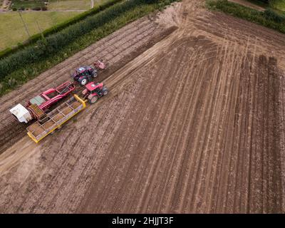
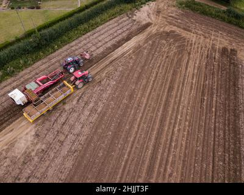
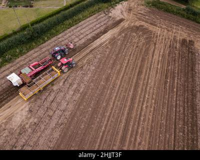

Movers is a company that transports various agricultural products between farms and retail outlets for farmers. Cereals, cattle, and perishable items such as milk, eggs, fish, and flowers are all transported by the company. Farm inputs such as fertilizers, manure, herbicides, insecticides, and seeds for planting are also transported by the company.
The company is also well known for transportation of goods from the farms to various areas where they are required. This helps easen transportation of goods hence helping supply to meet demand. The company also offers warehouse services for up to a period of three months on various goods. We have well equipped resources that enables us to care for perishable goods as well hence all is safe with the company.
